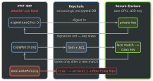

security · folio
In one line: The Keychain is an encrypted database outside your
sandbox (securityd); its rows open with class keys that
depend on lock state. The Secure Enclave is a separate chip: keys
born there never leave — data in, signature out. Biometrics are
secure only when they gate a key, never when they return a Bool.
Download PDF Print view LaTeX source
Keychain
SecItemAdd · SecItemCopyMatching · SecItemUpdate · SecItemDelete — dictionary in, OSStatus out. No upsert: add, and on errSecDuplicateItem update; absent → errSecItemNotFound.kSecClass: GenericPassword (tokens; identity = service + account), InternetPassword, Key, Certificate, Identity. Reads need kSecReturnData: true + kSecMatchLimit.- Sharing:
kSecAttrAccessGroup, same Team ID, group in the Keychain Sharing entitlement. kSecAttrSynchronizable = iCloud Keychain. Items usually survive uninstall — not a contract; never a “first run” flag.
kSecAttrAccessible… — choose by when you read | |
|---|
WhenPasscodeSetThisDeviceOnly | unlocked + passcode; deleted
if the passcode is removed |
WhenUnlocked (default) | only while unlocked — UI-driven secrets |
AfterFirstUnlock | 1st unlock → reboot, also locked:
background work |
…ThisDeviceOnly | never migrates (no iCloud sync, no restore
to a new device) |
Secure Enclave & biometrics
- SE keys: EC P-256 (signing + ECDH); since iOS 26 CryptoKit adds ML-KEM-768/1024 and ML-DSA-65/87. No RSA, no arbitrary blobs: generated and used inside; the app holds an opaque reference. CryptoKit
SecureEnclave.P256.Signing.PrivateKey — its dataRepresentation is a wrapped handle only this SE can use (store it in the Keychain). No SE on the Simulator.
- Protect a secret with the SE: encrypt it under an SE-bound key, or gate its item with a
SecAccessControl.
- Flags:
.biometryCurrentSet (item dies when a face/finger is enrolled — an attacker adding theirs loses access), .biometryAny, .userPresence (biometry or passcode), .privateKeyUsage (SE keys).
LAContext.evaluatePolicy = a Bool in hookable code: UX only. Reuse it via kSecUseAuthenticationContext (one prompt). Face ID needs NSFaceIDUsageDescription.
Example
let id: [CFString: Any] = [kSecClass: kSecClassGenericPassword,
kSecAttrService: "api", kSecAttrAccount: "token"]
var add = id; add[kSecValueData] = data
add[kSecAttrAccessible] = kSecAttrAccessibleAfterFirstUnlock
var st = SecItemAdd(add as CFDictionary, nil)
if st == errSecDuplicateItem {
let new = [kSecValueData: data] as CFDictionary
st = SecItemUpdate(id as CFDictionary, new) }
let acl = SecAccessControlCreateWithFlags(nil,
kSecAttrAccessibleWhenUnlockedThisDeviceOnly,
[.privateKeyUsage, .biometryCurrentSet], nil)!
let key = try SecureEnclave.P256.Signing
.PrivateKey(accessControl: acl)
let sig = try key.signature(for: nonce)
The trust boundary

Data Protection — files, same idea
.complete | unlocked only; key dropped 10 s after lock (Require Password: Immediately) |
.completeUnlessOpen | open files keep working when locked; new
files can be created |
.completeUntilFirstUserAuthentication | default — the
twin of AfterFirstUnlock |
.none | UID-key only, always readable |
data.write(to:options: .completeFileProtection); SQLite: the -wal/-shm files too. No passcode ⇒ no
passcode-derived keys: every class degrades to .none(unverified).
Traps
- Background upload fails at 3 am → token is
WhenUnlocked; locked read = errSecInteractionNotAllowed. Use AfterFirstUnlock.
- “Put the JWT in the Secure Enclave” — impossible; it holds keys.
if faceIDOK { showVault() } is a UI gate, not security..complete Core Data store + background launch = crash.- Tokens in
UserDefaults — a plain plist in the container.
- Add succeeds, read says
errSecItemNotFound → query differs (service/account/access group) or no kSecReturnData.
…ThisDeviceOnly + kSecAttrSynchronizable — contradictory; synced items cannot be device-only.
Remember
“Keychain for secrets, class for when, enclave for keys,
biometry on the key — never on a Bool.”
Related: app hardening & privacy · Cryptography with CryptoKit (AES.GCM, HKDF) · Device attestation (App Attest, SE-backed) · passkeys · Certificate pinning in 2026